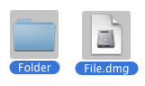
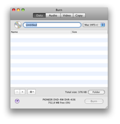
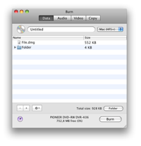
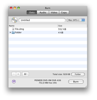
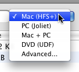
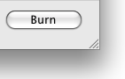
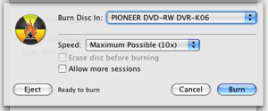
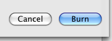
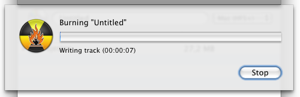

Burning Data Discs:
Data discs are mostly used for computers There are
different types of data discs,
all with their own purpose. Burn can create most common discs.
1 Select some files
This can be any file or folder.

2 Drop them in the list
Drop the files inside the list. To use a single folder as
layout drop it in the Data tab around the list.
 

3 Select a filesystem
Select a filesystem:
Mac (HFS+):
Choose this filesystem if you want use the
discs on Macs only. Windows can't read this filesystem.
PC (Joliet):
This filesystem is most common for CDs and
can be read by most computers. It can also be used on DVDs.
DVD (UDF):
This filesystem is most common for DVDs. It
can be read by most modern computers (this includes Mac OS 9 systems
and Windows 98 systems). It can also be used on CDs. (this item is not
available on Panther)
Mac + PC:
This is a mix of a Mac filesystem + a PC
filesystem. It can be read on almost all computers, but it keeps Mac
specific information intact (like icons and resource forks).
Advanced:
A combination of the above mentioned filesystems.But also
ISO9660 (old PC filesystem), HFS Standard (old Mac filesystem) and UDF
/ ISO 9660 on Panther.

4 Click on Burn
This will bring up a dialog.

5 Choose options
Choose options for the burning session. For more settings, see the
Preferences under the Burn menu.

6 Burn the disc
Now click Burn to burn the disc.

7 Burn
will burn the disc
While burning Burn will show a dialog with the status of the
burn.
